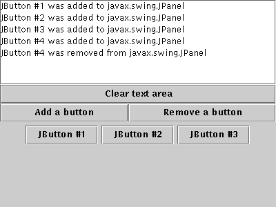

Feedback Form
|
|
Start of Tutorial > Start of Trail > Start of Lesson |
Search
Feedback Form |
Container events are fired by aContainerjust after a component is added to or removed from the container. These events are for notification only — no container listener need be present for components to be successfully added or removed.The following example demonstrates container events. By clicking Add a button or Remove a button, you can add buttons to or remove them from a panel at the bottom of the window. Each time a button is added to or removed from the panel, the panel fires a container event, and the panel's container listener is notified. The listener displays descriptive messages in the text area at the top of the window.
 [PENDING: New screenshot with sample output forthcoming.]
Try this:
- Run ContainerEventDemo using JavaTM Web Start. Or, to compile and run the example yourself, consult the example index.
- Click the button labeled Add a button.
You'll see a button appear near the bottom of the window. The container listener reacts to the resulting component-added event by displaying "JButton #1 was added to javax.swing.JPanel" at the top of the window.- Click the button labeled Remove a button.
This removes the most recently added button from the panel, causing the container listener to receive a component-removed event.You can find the demo's code in
ContainerEventDemo.java. Here is the demo's container event handling code:
public class ContainerEventDemo ... implements ContainerListener ... { ...//where initialization occurs: buttonPanel = new JPanel(new GridLayout(1,1)); buttonPanel.addContainerListener(this); ... public void componentAdded(ContainerEvent e) { displayMessage(" added to ", e); } public void componentRemoved(ContainerEvent e) { displayMessage(" removed from ", e); } void displayMessage(String action, ContainerEvent e) { display.append(((JButton)e.getChild()).getText() + " was" + action + e.getContainer().getClass().getName() + newline); } ... }
The ContainerListener Interface
The corresponding adapter class is
ContainerAdapter.
Method Purpose componentAdded(ContainerEvent)Called just after a component is added to the listened-to container. componentRemoved(ContainerEvent)Called just after a component is removed from the listened-to container.
Method Purpose Component getChild()Returns the component whose addition or removal triggered this event. Container getContainer()Returns the container that fired this event. You can use this instead of the getSourcemethod.
The following table lists the examples that use container listeners.
Example Where Described Notes ContainerEventDemoThis section Reports all container events that occur on a single panel to demonstrate the circumstances under which container events are fired.
|
|
Start of Tutorial > Start of Trail > Start of Lesson |
Search
Feedback Form |
Copyright 1995-2004 Sun Microsystems, Inc. All rights reserved.